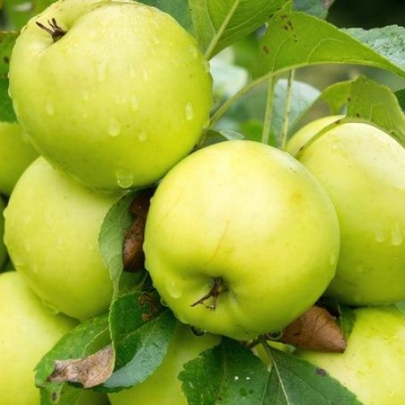

Антоновка — один из главных сортов не только Фатежских садоводов, но и всей России. В ней множества полезных биоактивных веществ, пектина, витаминов.

Белый налив считается ранним сортом российскй селекции, в разных местностях России он имеет различные названия, такие как Долгостебелка, Пудовщина, Бель.

Раннезимний сорт, получен во Всероссийском НИИ селекции плодовых культур из семян от свободного опыления в 1981 году иммунной к парше.

Зимний сорт Всероссийского НИИ генетики и селекции плодовых растений им. И.В. Мичурина, получен от скрещивания сортов Прима и Бессемянка мичуринская.

Зимний сорт Всероссийского НИИ генетики и селекции плодовых растений им. И.В. Мичурина. Получен от скрещивания сортов Антоновка обыкновенная и Ренет Ландсбергский.

Сорт яблони Болотовское был создан в 1977 году в Научно-исследовательском центре селекции плодовых культур.